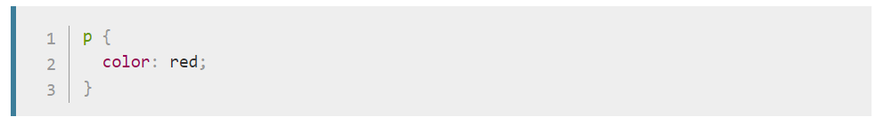
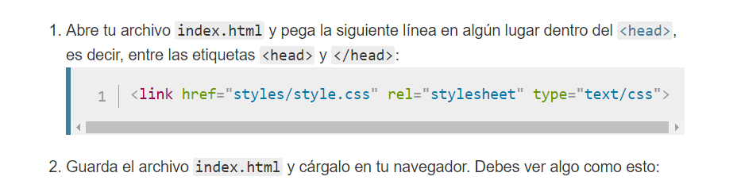
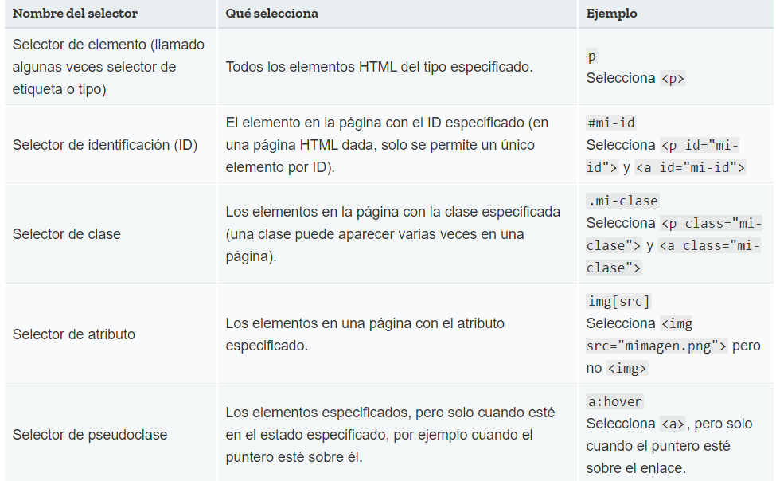

CSS básico
CSS (Hojas de Estilo en Cascada) es el código que usas para dar estilo a tu página web. CSS Básico te lleva a través de lo que tú necesitas para empezar. Contestará a preguntas del tipo: ¿Cómo hago mi texto rojo o negro? ¿Cómo hago que mi contenido se muestre en tal y tal lugar de la pantalla? ¿Cómo decoro mi página web con imágenes de fondo y colores?
Entonces ¿qué es CSS, realmente?
Como HTML, CSS (Cascading Style Sheets) u Hojas de estilo en cascada en español, no es realmente un lenguaje de programación, tampoco es un lenguaje de marcado. Es un lenguaje de hojas de estilo, es decir, te permite aplicar estilos de manera selectiva a elementos en documentos HTML. Por ejemplo, para seleccionar todos los elementos de párrafo en una página HTML y volver el texto dentro de ellos de color rojo, has de escribir este CSS:
Vas a probarlo: pega estas tres líneas de CSS en un nuevo archivo en tu editor de texto y guarda este archivo como style.css en tu directorio styles (estilos).
Pero aún debes aplicar el CSS a tu documento HTML, de otra manera el estilo CSS no cambiará cómo tu navegador muestra el documento HTML
Diferentes tipos de selectores
Existen muchos tipos diferentes de selectores. Antes, solo viste los selectores de elementos, los cuales seleccionan todos los elementos de un tipo dado en los documentos HTML. Sin embargo puedes hacer selecciones más específicas que esas. En seguida están algunos de los tipos de selectores más comunes:
Existen muchos más selectores para explorar, y podrás encontrar una lista más detallada en la Guia de selectores
Cajas, cajas, todo se trata de cajas
Una cosa que notarás sobre la escritura de CSS es que trata mucho sobre cajas —ajustando su tamaño, color, posición, etc—. Puedes pensar en la mayoría de los elementos HTML de tu página como cajas apiladas una sobre la otra.
No es de extrañar que el diseño de CSS esté basado principalmente en el modelo de caja. Cada una de las cajas que ocupa espacio en tu página tiene propiedades como estas:
- padding (relleno), el espacio alrededor del contenido. En el ejemplo siguiente, es el espacio alrededor del texto del párrafo.
- border (marco), la línea que se encuentra fuera del relleno.
- margin (margen), el espacio fuera del elemento que lo separa de los demás.
- En esta sección también se utiliza:
- width (ancho del elemento)
- background-color, el color de fondo del contenido y del relleno
- color, el color del contenido del elemento (generalmente texto)
- text-shadow: coloca una sombra difuminada en el texto dentro del elemento
- display: selecciona el modo de visualización para el elemento (no te preocupes de esto por ahora)